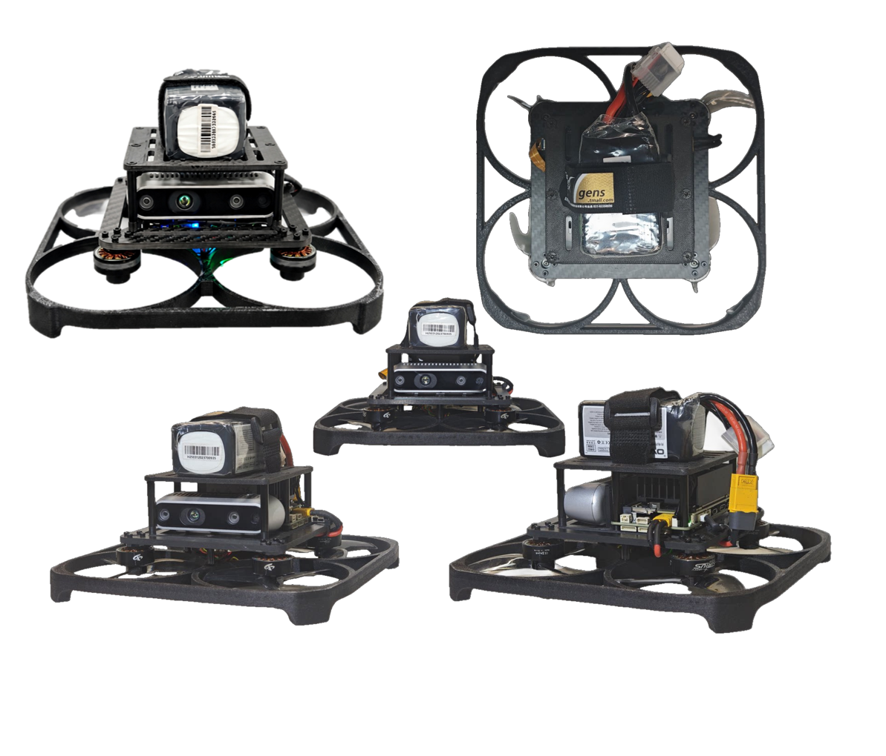
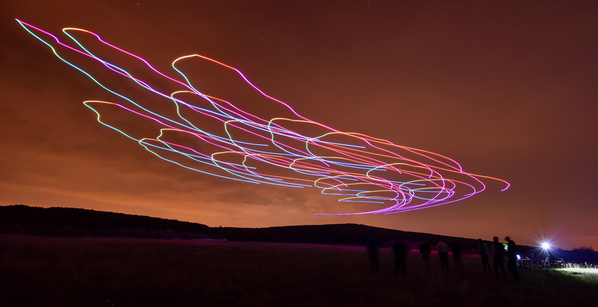
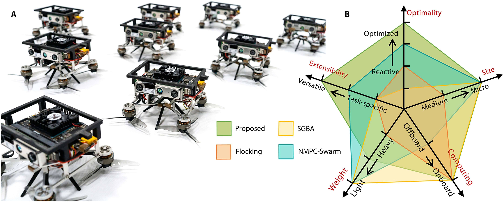
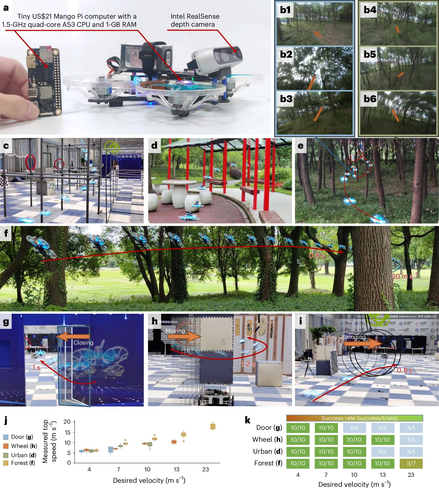
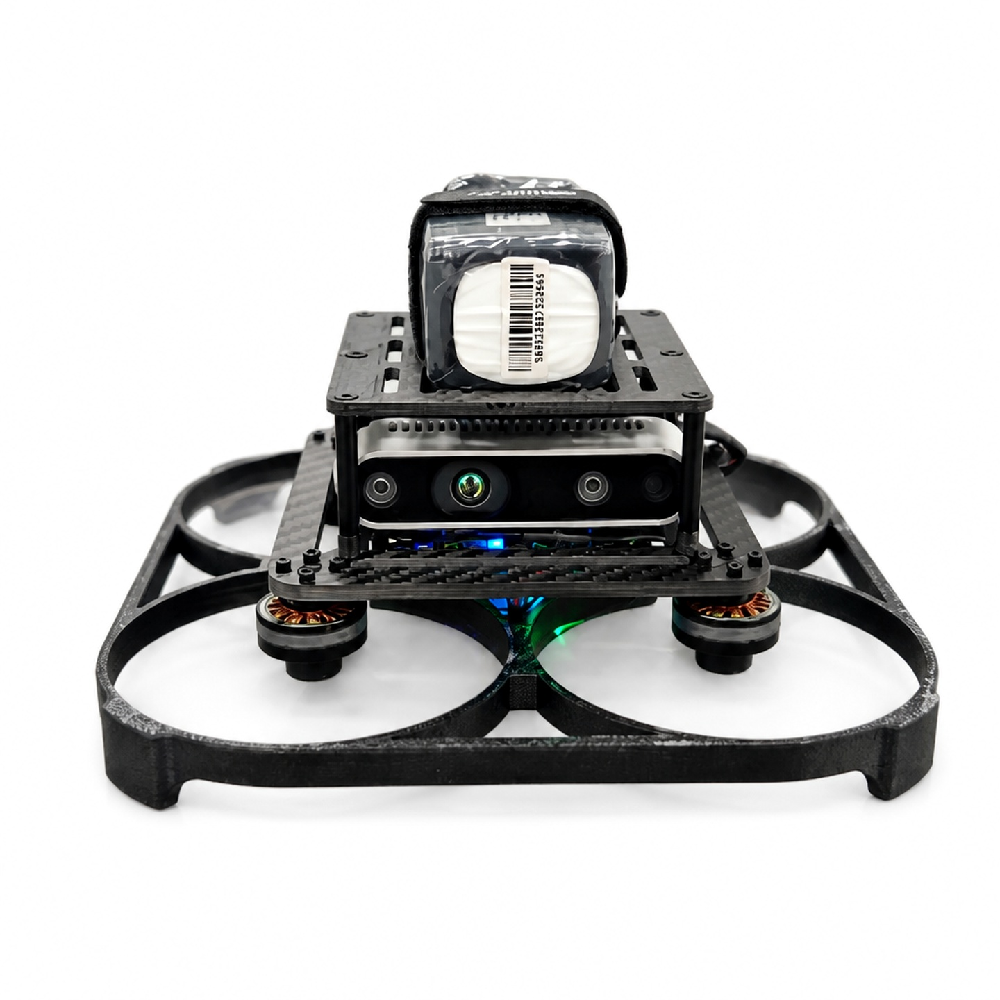
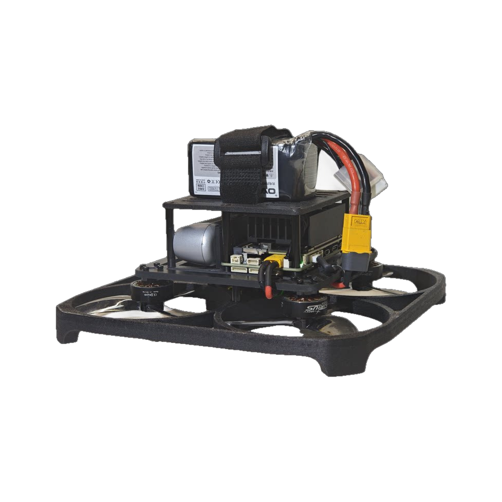
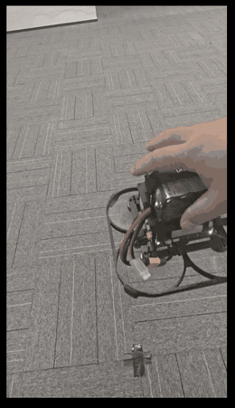
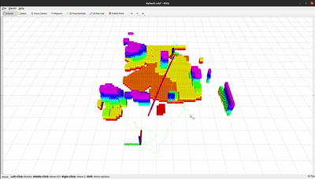
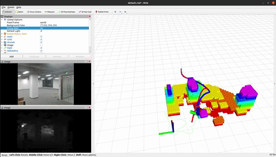

EVT-1 from several angles.
On the path toward general swarm intelligence, the drone is currently the most mature of the candidate testbeds, so we are building that one first. EVT-1 is an autonomous stereo-vision drone now being assembled at Evolution Tech. In corridors and laboratories without satellite positioning, it must first take off, hold a stable hover, and avoid obstacles. This single aircraft is not meant for formation displays. It is the sensing and decision-making entry point for the swarm-intelligence experiments that follow.
Formation flight, obstacle avoidance, and slung-load transport are tasks, not the result. The platform must let us switch, for each vehicle, three information channels on or off: local vision, wireless communication, and physical coupling through the cables and the payload. We ask how much collective decision-making remains once explicit communication is removed, whether the three channels can stand in for one another, and whether more aircraft and more information can make the collective judgment worse.
Recent work has tightened one requirement: perception, localization, and decisions have to be made on the aircraft, not handed to a ground station or a motion-capture room.
In 2018, Vásárhelyi et al. applied local rules to autonomous swarm flight in bounded spaces with obstacles.[1] Coordination had to finish within a limited time. External positioning, available then, was not where the problem ended.

In 2022, Zhou et al. showed outdoor multi-robot flight supported by onboard sensing, localization, planning, and communication between aircraft.[2] The hard part was not a trajectory drawn in advance. Each aircraft had to observe and compute for itself, and stay aligned in time with its neighbors.

In 2025, Zhang et al. trained vision-based flight policies with differentiable physics, and discussed multi-robot flight without explicit inter-robot communication or a central plan.[3] High-speed flight by one aircraft and cooperation among several are different experiments. Their performance limits should not be mixed.

These papers show that flight can be done onboard, and that continuous communication between aircraft is not required for navigation. They have not, on one set of aircraft, deleted vision, radio, and physical coupling one channel at a time, and watched collective behavior pass from coherent to oscillatory and then to fragmented. That is what the swarm-intelligence experiments on EVT-1 are for. Hover, depth, and obstacle avoidance on a single aircraft only ensure that, after a channel is removed, what remains can still fly.
The prototype is for corridors, laboratories, and other tight indoor spaces. The wheelbase is about 136 mm and the takeoff mass about 800 g. It uses 3.5-inch propellers with guards. An Intel RealSense D435 looks forward. An optical-flow and ranging module stabilizes the aircraft near the ground, and stereo depth supplies the geometry of the space around it. The flight controller runs PX4. The onboard computer is an NVIDIA Jetson Orin, with Ubuntu and ROS above it.
The airframe is our own. The mid-plate carries the camera and the motors. The guards enclose the propeller disks. The bottom plate faces the optical-flow sensor downward, and the top plate holds the computer. The flight controller is mounted upside down, with the SD card facing out. Optical flow is on GPS1. The telemetry radio and the receiver are on Telem1. The onboard computer is on Telem2.
| Item | EVT-1 |
|---|---|
| Wheelbase | About 136 mm |
| Takeoff mass | About 800 g |
| Propellers | Qianfeng D90s-3, 3.5 inch, two pairs, with guards |
| Motors | Tianlang 2006, 1960 KV × 4 |
| Flight controller | MicoAir H743v2 AIO 35A, PX4 |
| Receiver | ELRS |
| Telemetry | MicoAir LR24 (LR24-F and F-Mini) |
| Near-ground sensing | MicoAir MTF-02P optical-flow and ranging module |
| Forward vision | Intel RealSense D435 |
| Onboard computer | NVIDIA Jetson Orin, Ubuntu and ROS |


Left: propeller guards, forward-facing D435, and the computer above. Right: onboard computer, battery, and power leads.
Three minimal things now work reliably. They are what we need before we can remove an information channel. They are not the collective result we intend to report.
Without satellites, the aircraft first has to keep itself inside a limited volume. The MTF-02P provides optical flow and range near the ground. The flight controller uses both to hold a hover.
The D435 returns forward depth. An obstacle is then a distance the computer can use, not only a patch of color in the image.
For a swarm rule, this comes first. A vehicle has to estimate its own state, see the space next to it, and judge whether the next action can be carried out.



Once takeoff, depth, and short-range avoidance are stable on one aircraft, we will turn it into a swarm-intelligence testbed. The upgrade adds wireless communication and a cable-suspended payload, each of which can be switched off on its own, and a short-range lidar alongside the stereo camera. The experiments below come after that upgrade.
An action may depend on only four things: what the vehicle sees, what the radio delivers, the forces it feels, and its own history. The sequence is the same throughout: search from local vision, coordinated motion, then cooperative transport. We then turn the radio off, increase the delay, and fail one vehicle, and we check whether synchronization, transport, turning, and recovery are still there.
Vision does not send images. Each aircraft exchanges a target bearing, a confidence, local obstacles, and a timestamp. More aircraft bring more views, more occlusion, and more false detections that agree with each other. Collective judgment need not rise with number.
Transport asks whether physical coupling is a communication channel. One vehicle's action becomes a force another can measure in the IMU, the motor load, and the swing of the payload. If synchrony and recovery remain after the radio is off, the force is the message. If the group comes apart at once, explicit communication is still required.
As the fraction of failed vehicles rises, we ask whether search or formation drops abruptly past some fraction, rather than writing a backup policy for each aircraft.
Stereo vision gives dense geometry nearby, and fails on smoke, glass, and weak texture. A short-range lidar on the same aircraft will keep a measurable geometric channel when vision is deliberately degraded, so we can see whether the collective boundary moves earlier. The assembly steps will be written up separately as a build guide.
1. Vásárhelyi, G. et al. Optimized flocking of autonomous drones in confined environments. Science Robotics 3, eaat3536 (2018). https://doi.org/10.1126/scirobotics.aat3536
2. Zhou, X. et al. Swarm of micro flying robots in the wild. Science Robotics 7, eabm5954 (2022). https://doi.org/10.1126/scirobotics.abm5954
3. Zhang, Y. et al. Learning vision-based agile flight via differentiable physics. Nature Machine Intelligence 7, 954–966 (2025). https://doi.org/10.1038/s42256-025-01048-0